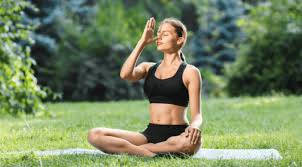

1. Always sit in Sukhasana with your hands resting sideways on the knees.
2. You can also sit in Padmasana.
3. If you begin from the left then close the right nostril with your right thumb and inhale slowly to fill up your lungs.
4. Now, exhale slowly from the right nostril.
5. It is essential to focus on your breath and practice the technique slowly.
6. Repeat 60 times or for 5 minutes. You can do this any time of the day.
7. Ensure that your back is straight and shoulders relaxed while you perform the pranayam.